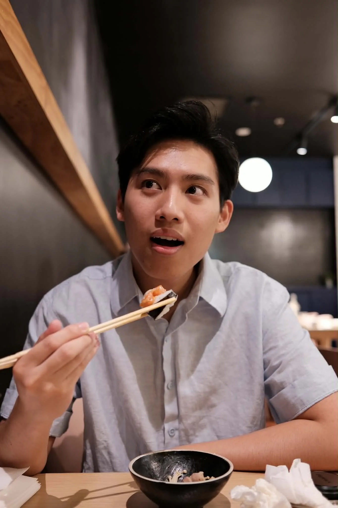
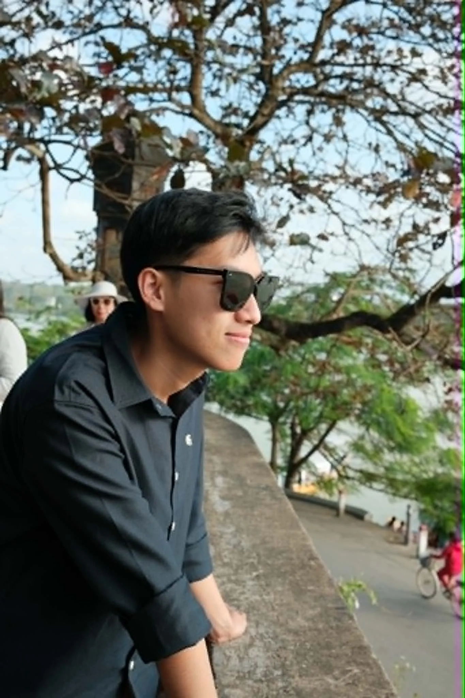

Hi,
I’m Vigo.
About me
I’m from Vietnam and I live in Brisbane, where I work on data and cloud projects.
I like trying new places to eat, travelling and taking photos. I enjoy dressing well, and I don’t mind a silly photo either.

Food and photos
I enjoy going out for a meal and trying food I haven’t had before. I take photos along the way, and I like keeping the funny ones too.



Travelling in Vietnam
I’ve travelled to Đà Nẵng, Huế and Hội An. I like exploring a place, trying the food and stopping for a photo when something catches my eye.



Working
with me
I’m easygoing and I like a laugh. In a team, I try to listen before jumping in, ask questions when I’m unsure, and take feedback seriously.
I’m looking for an internship or graduate role in Data or Cloud Engineering. I’d like to contribute to a team that shares ideas, gives useful feedback and takes care with its work.


Education
Truong Lieu Dong (Vigo) Dang
Data & Cloud Engineering · Brisbane, Australia
Queensland University of Technology
Bachelor of Data Science
Minor: Advanced Computing for Data Science
Expected graduation: July 2027
2024 Executive Dean’s Commendation for Academic Excellence (Semester 2 teaching period cluster)
Education & project experience Download résumé PDFTechnical skills Programming, cloud and machine learning
My projects span desktop prediction workflows, asynchronous cloud processing and source-linked retrieval.
Programming & dataPython, SQL, R, C++17, C#, JavaScript/Node.js; Pandas, NumPy, MySQL, DynamoDB
Machine learningscikit-learn, XGBoost, LightGBM; classification, regression, model evaluation
Deep Learning & AIPyTorch, TensorFlow; neural networks, embeddings, RAG
Cloud & backendAWS S3, Lambda, API Gateway, Cognito, SQS, ECS/Fargate, CloudWatch; REST APIs, Docker
Tools & deliveryGit/GitHub, Linux, automated testing, Power BI, PyQt6, data visualisation
My deep learning work includes RGB and elevation inputs, a TensorFlow/Keras segmentation model and tiled inference for drone imagery.
View the segmentation implementation